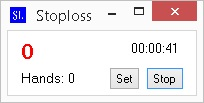

Démarrage
Dézipper le dossier stoploss a l'endroit souhaité. Pour chaque actualisation future il suffira de dézipper par dessus votre ancien dossier stoploss pour garder les configurations telles quelles.
Lancer l'application (StopLoss.exe):

Si vous obtenez une erreur au lancement de l'appli, veuillez télécharger "net framework 4.0" de microsoft.
Configuration de la DB
Dans les champs "server", "port", "userdb", "password" vous devez renseigner les valeurs nécessaires pour que le soft puisse se connecter à votre DB postgresql. Les valeurs ici insérées correspondent aux valeurs par défaut:
Serveur: 127.0.0.1
Port: 5432
Base de Donnée: clicquer sur le trracker dans l'option database
Utilisateur BD: postgres
Mot de passe: postgrespass or dbpass
Le champ database correspond au nom de la base de donnée de votre tracker

Après avoir rempli tous les champs, cliquer sur test. Si c'est ok vous obtiendrez ce message et l'application se ferme.

En cas contraire, veuillez vérifier les données insérées, plus particulièrement le nom de la base de donnée.
Ré-ouvrir l'application, et désormais vous pourrez saisir le pseudo de la room où vous jouez ou votre alias de hem ou pt4 (si tout est ok vous aurez ceci).

Conf. Stop
Dans l'onglet conf. stop vous allez pouvoir configurer vos stop. Ici vous pouvez tous les configurer ou aucun, à votre choix.

Stoploss:
Intermédiaire: A partir de xx BBs un son retentit durant 5 secondes.Final: À partir de xx BBs négatif le son retentit.
StoplossPeak:
On commence notre session et, au bout d'un certain temps, on gagne 200bbs. Donc, si dans "over" on a mis 160bbs, le stoplosspeak commence à rentrer en action (vu que 200 > 160). Maintenant, si je perd 180 bbs et que j'ai renseigné 150bbs dans "stoplosspeak", de 200 gagnés, je tombe à 20bbs. Dans ce cas là, le son retentit car j'ai perdu plus que les 150bbs définis dans "stoplosspeak".StopHands:
À partir de xx hands le son retentit.StopTime:
À partir de xx minutes le son retentit (insérer en minutes).StopWin:
Intermédiaire: A partir de xx BBs un son retentit durant 5 secondes.Final: À partir de xx BBs positif le son retentit.
Resume on Stop:
Si on coche, à la fin de la session, en cliquant sur stop on se verra amené vers l'onglet "resume session" où il y aura le résumé de la session.Hide BBs:
Permet de cacher les bbs dans la fenêtre qui apparaît après avoir cliqué sur start.Close Skype:
En cochant, l'application ferme skype pour vous.Verifier Application:
Préviend if skype, chrome, firefox ou internet explorer est ouvert.Active button set:
Permet d'activer le bouton "set" pour réajuster les valeurs des stop en cours de session.Rage Quit:
Ferme toutes les tables + le lobby.Compatible winamax, poker stars et ipoker, pour plus de room j'ai besoin d'un print screen de ce genre:

Snooze:
Fonctionne comme un radio réveil, sélectionner le temps désirez.Block Limit above:
Ceci permet de vous interdire de jouer une limite pour laqu'elle, selon votre BRM, vous ne devriez pas jouer. Choisissez la limite maximal.Room compatible: pokerstars, winamax, ipoker et réseau party poker.
Pour l'instant cela fonctionne seulement avec le no limit car je ne joue que sur cette room et cette limite.
Pour plus de limite et de room envoyer moi une HH (3 ou 4 mains suffit et vous pouvez changer les pseudos).
Sounds:
Permet de définir les sons souhaités(seulement des sons *.wav et *.mp3).Resume Session
Cet onglet vous permettra d'avoir un résumé de votre session et de vos meilleurs résultats positifs et négatifs depuis que vous avez stoploss.
Start
Start pour commencer la session.Si vous aimez le soft un petit don, merci.
En bas, vous avez aussi la possibilité d'envoyer un mail pour une critique ou suggestion.

Durant la session
